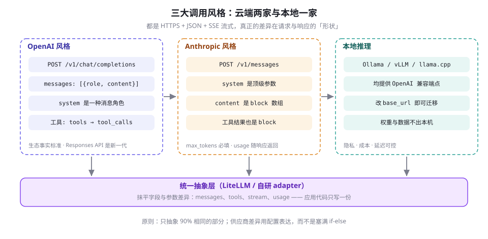
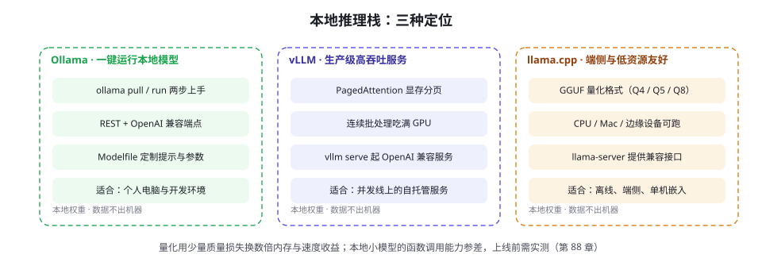

开发环境与 SDK 速览：OpenAI / Anthropic / 开源模型
写第一个 Agent 之前，先解决「怎么调模型」。本章对比 OpenAI 与 Anthropic 两家 SDK 的风格差异，跑通 Ollama 与 vLLM 本地推理，再设计一层薄薄的统一抽象——让你既不被任何一家供应商锁死，也不过早地为多样性买单。
一张地图：三种调用风格
先给结论：所有主流 LLM 接口都是 HTTPS + JSON 请求、SSE 流式响应，学会一个就等于学会了一半；真正的差异不在协议，而在请求与响应的「形状」——系统提示放在哪、多模态内容怎么组织、工具调用长什么样、哪些参数必填。市场上主要存在三种形状：
- OpenAI 风格：
chat.completions接口，一切内容都是messages数组里的角色消息（system 是其中一种角色）。它最早普及，如今是事实标准——几乎所有本地推理引擎都提供 OpenAI 兼容端点。 - Anthropic 风格：
messages接口，但系统提示是顶级参数而非消息，内容用「内容块（Content Block）」数组组织，文本、图片、工具调用都是不同类型的 block，返回值里usage明细与stop_reason一应俱全。 - 本地推理：Ollama、vLLM、llama.cpp 等自托管引擎，对外普遍暴露 OpenAI 兼容接口——换一个
base_url，云端代码原样跑在本地。
读官方文档时，优先看四页：参数参考（每个参数的类型、默认值、取值范围）、错误码页（4xx 与 5xx 的准确含义，排错时救命）、Changelog / 更新日志（模型退役与参数废弃都从这里公告）、速率限制页（配额按账户档位走，见 第 12 章）。LLM API 是「活的接口」：模型会退役、参数会废弃、行为会随版本悄悄变化——把「看 Changelog」纳入每周例行，比任何防御性代码都管用。
模型命名也值得几分钟弄清。行业习惯是「系列名 + 代数 + 档位 + 日期/变体」：gpt-4o-mini 的 mini 是轻量档位；claude-sonnet-4-5 中 sonnet 是性能/成本均衡档（另有 Haiku 轻量与 Opus 旗舰档）；带日期后缀（如 -20241022）的是快照版本。生产服务固定到具体版本，避免「模型升级导致行为漂移」这种最难排查的事故；探索期再用别名追新。两家的 Python SDK 都同时提供同步与异步客户端（OpenAI() / AsyncOpenAI()），写并发 Agent 时用异步客户端配合 asyncio，是免费的吞吐提升。
超时与重试也值得显式设置而不是用默认值。两个 SDK 都内建了网络级自动重试与默认超时，但默认值未必匹配你的业务：长任务的读取超时要放宽，交互式 UI 反而要收紧并配取消逻辑。生产配置至少三项：timeout（连接与读取分开想）、max_retries（网络层重试交给 SDK，业务层重试自己写，边界在 第 12 章）、以及重试事件的日志埋点——「这一单被自动重试过两次」是事后归因的关键信息，默认情况下它悄无声息地发生了。

| 维度 | OpenAI（chat.completions） | Anthropic（messages） |
|---|---|---|
| 系统提示 | messages 里的 system 角色消息 | 顶级 system 参数，不进 messages |
| 消息内容 | 字符串或 parts 数组 | Content Block 数组（text / image / tool_use / tool_result） |
| 输出上限 | max_tokens 可选 | max_tokens 必填 |
| 工具调用返回 | assistant 消息的 tool_calls 数组 | content 里的 tool_use 块，stop_reason="tool_use" |
| 工具结果回填 | role:"tool" 消息 | user 消息中的 tool_result 块 |
| 流式形态 | chunk 增量（delta） | 类型化事件（message_start / content_block_delta / message_stop） |
| 用量观测 | 响应 usage 字段 | 响应 usage 字段 + 独立 token 计数端点 |
OpenAI SDK：事实标准的写法
OpenAI Python SDK（v1.x）围绕资源方法组织：client.chat.completions.create(...)。三个使用要点。其一，多轮对话没有服务端会话，messages 由你自己逐轮拼接——每轮把全部历史重新发一遍，成本随轮数增长（机制见 第 4 章 KV Cache 一节，省钱手段见 第 12 章）。其二，流式返回的是 chunk 序列，从 delta.content 里取增量文本。其三，结构化输出与工具调用的写法已在第 8 章给过完整代码，此处聚焦最常用的流式最小例：
from openai import OpenAI
client = OpenAI() # 默认读环境变量 OPENAI_API_KEY
stream = client.chat.completions.create(
model="gpt-4o-mini",
messages=[
{"role": "system", "content": "你是一个简洁的助手"},
{"role": "user", "content": "用一句话解释什么是 Agent"},
],
stream=True, # 流式：边生成边返回
)
for chunk in stream: # 逐段拿增量文本
if chunk.choices[0].delta.content:
print(chunk.choices[0].delta.content, end="", flush=True)常用参数速览：temperature 与 top_p 控制随机性（原理见 第 5 章，同类任务两者只调其一）；stop 传入停止序列，让模型在特定字符串处收笔；tools 与 response_format 分别服务工具调用与结构化输出；seed 配合固定温度可近似复现输出（不保证严格一致）。SDK 内建了连接错误与限流的自动重试（max_retries 参数，默认数次、指数退避），单次调用场景交给它即可；但业务级重试（失败后换提示词、降级模型）必须自己写，两者的边界在 第 12 章划清。开发期想知道「这轮花了多少 Token」，除了看响应 usage，也可以用 tiktoken 库在发送前离线计数，提前做上下文预算。
输出上限不是越大越好：它直接框住单次调用的最坏计费与最长等待。经验做法是按任务类型估一个「够用」的输出量再加两成余量——一句话回答给 256，结构化抽取给 1K~2K，长文生成才放开到数 K；上线一周后从 usage 里复盘实际输出的分布，再回头修参数。放任 max_tokens 很大，等于给失控循环（模型复读、跑飞）开了无限透支的信用卡。
import openai
try:
resp = client.chat.completions.create(
model="gpt-4o-mini", messages=messages)
except openai.AuthenticationError: # 401：密钥无效 —— 查环境变量
raise
except openai.PermissionDeniedError: # 403：无权访问该模型 —— 查配额档位
raise
except openai.RateLimitError as e: # 429：限流 —— 退避后重试（ch012）
wait = e.response.headers.get("retry-after", "5")
except openai.InternalServerError: # 5xx：服务端抖动 —— 少量重试
pass
except openai.BadRequestError as e: # 400：请求本身错 —— 别重试，修代码
print(e.message) # 常见：上下文超长、参数非法| 状态码 | 含义 | 标准处置 |
|---|---|---|
| 401 | 认证失败 | 不重试；查密钥、环境变量与所属组织/项目 |
| 403 | 无权访问 | 不重试；查模型访问权限与账户档位 |
| 400 | 请求非法 | 不重试；多为上下文超长或参数非法，先本地计量再修请求 |
| 429 | 限流 | 按 retry-after 退避重试；持续触发则申请提额或降级（ch012） |
| 500 / 529 | 服务端错误 / 过载 | 少量短退避重试；超过阈值切换降级链（主模型 → 备模型） |
2025 年起 OpenAI 推出了新一代 Responses API：把对话状态、内置工具（网页搜索、文件检索等）与执行轨迹整合进一个接口，也是 OpenAI Agents SDK 的底座。两者将长期并存——chat.completions 生态最广、第三方支持最多，Responses 代表新范式。为本书的可移植性考虑，Agent 原理章节统一使用兼容性最好的写法，Responses API 的细节留给 第 29 章。
OpenAI 的密钥挂在「组织/项目」之下，速率限制与支出上限按账户档位（Tier）自动晋升——新账户默认档位的并发与每分钟 Token 都很低，跑批前先在控制台确认档位并预设支出上限。团队实践：一个项目一对密钥、密钥不跨项目复用，用量在控制台按项目归集；这些配额与支出护栏如何转化为代码里的限流与预算逻辑，是 第 12 章的主题。
Anthropic SDK：内容块的形状
Anthropic SDK 的心智模型是「消息 + 内容块」。调用时 system 是顶级参数（与消息分开），max_tokens 必填；响应的 content 是块数组——单轮纯文本回答取 content[0].text；涉及工具时会出现 tool_use 块（见 第 8 章的抽取示例，全景在 第 17 章）。一条 assistant 消息可以由多个块组成（先文字后工具调用），遍历时按块的 type 分发处理，别假设 content[0] 永远是文本。
from anthropic import Anthropic
client = Anthropic() # 默认读环境变量 ANTHROPIC_API_KEY
resp = client.messages.create(
model="claude-sonnet-4-5", # 示例模型名，以官方文档为准
max_tokens=1024, # Anthropic 必填输出上限
system="你是一个简洁的助手", # 系统提示：顶级参数，不是消息
messages=[{"role": "user",
"content": "用一句话解释什么是 Agent"}])
print(resp.content[0].text) # content 是 block 数组
print(resp.stop_reason) # end_turn / tool_use / max_tokens ...
print(resp.usage.input_tokens, resp.usage.output_tokens) # 用量直接可得Anthropic 侧有三个值得了解的进阶点。流式事件：流式接口返回类型化事件（message_start 携带用量元信息、每个内容块开合有 content_block_start/delta/stop、结束有 message_stop），比 OpenAI 的扁平 chunk 更结构化，适合精确驱动 UI 状态机。Prompt Caching：在长系统提示或大文档的块上加 cache_control 标记，服务端会缓存该前缀，命中部分的读取价格大幅折扣——多轮 Agent 与长文档场景的省钱利器（定价细节与通用缓存策略在 第 12 章算账）。扩展思考：新一代 Claude 模型支持 thinking 类参数开启可见的推理过程，复杂推理任务可显著受益，具体开关名与计费以官方文档为准。模型名一律固定到版本号，理由同上一节。
这个形状差异还带来一个工程文化上的差别：Anthropic 生态把长系统提示当作主要工程面。角色设定、行为守则、工具使用规范、领域知识都堆在 system 参数里，官方实践也鼓励「把 system 写厚」——它与 Prompt Caching 是天作之合：system 稳定不变才能吃到前缀缓存折扣。由此推出一条实用纪律：易变内容（用户输入、检索结果、时间戳）放 user 消息，稳定内容（守则、工具说明、示例）放 system——这条纪律同时优化了缓存命中率和行为一致性，在多轮 Agent 里收益会复利放大。大批量离线任务两家都有对位产品（OpenAI 的 Batch API 与 Anthropic 的 Message Batches API），约五折定价换取非实时处理——这正是「把离线与在线分流」的第一道省钱包，细节留给 第 12 章。
两个 SDK 默认都从环境变量读密钥（OPENAI_API_KEY / ANTHROPIC_API_KEY）。不要把密钥写进代码提交仓库，也不要在日志里打印请求头。团队项目用密钥管理服务或 .env 文件（并加入 .gitignore），泄露的密钥要在供应商控制台立即吊销轮换。
本地推理：Ollama、vLLM 与 llama.cpp
什么时候需要本地模型？四类理由：隐私（数据不能出域）、成本（大批量推理的边际电费远低于 API 账单）、离线（边缘与内网环境）、可控（版本、量化、微调权重都自己定）。三个引擎定位互补，几乎不冲突：

Ollama 是最快获得反馈的路径：pull 一个模型、run 起对话，服务即带 OpenAI 兼容端点（默认 127.0.0.1:11434/v1），支持 Modelfile 定制系统提示与参数，并提供接受 JSON Schema 的结构化输出（见 第 8 章）。vLLM 是生产自托管的主力：PagedAttention 把 KV Cache 像操作系统分页一样管理（Kwon et al., 2023），配合连续批处理（Continuous Batching）把 GPU 吃满，吞吐比朴素部署高数倍（量级），并提供完整的 OpenAI 兼容服务。llama.cpp 走端侧路线：GGUF 量化格式让 7B 级模型在 8GB 内存、甚至在笔记本 CPU 上可跑，Q4 级量化用少量质量损失换数倍内存与速度收益。
本地部署前先学会算显存账，避免「拉了模型跑不起来」的尴尬。显存占用 ≈ 权重 + KV Cache + 激活：7B 模型 FP16 权重约 14GB（量级），INT4/Q4 量化后约 4~5GB；KV Cache 随上下文线性增长（单 Token 开销与层数、头数相关，第 4 章的账在这里兑现），把 --max-model-len（或对应参数）从 32K 收到 8K，能省出大量显存给并发批次。CPU 推理的期望要管理好：7B Q4 模型在现代笔记本上大致是每秒个位数到十余 Token 的量级——能跑、能交互，但别指望生产并发。落选方案也要想清楚：数据完全不能出域但模型能力要求高时，「本地小模型 + 云端大模型分流」的混合架构往往比硬上本地大模型更划算。
GGUF 的 Q 系列标签表示量化位宽：Q8 接近无损，Q5/Q4 是体积-质量的主流平衡点，更低档（Q3 及以下）质量下滑开始明显。经验路径：先跑社区默认档（如 Q4_K_M），在你的真实任务上评测；质量不达标再上 Q5/Q8，而不是一步到位用最大量化浪费内存。同等显存下，「大模型 + 更狠量化」与「小模型 + 更轻量化」往往各有所长——前者知识面广但细节糊，后者响应锐利但能力窄，用你自己的评测集裁决。
Ollama 的模型 tag（如 qwen2.5:7b）对应「模型 + 参数档 + 量化」的组合，ollama list 查看本地占用、ollama rm 清理；单模型动辄数 GB，跑过一轮选型后本地轻松堆出几十 GB。给团队的建议：保留当前生产档与一个回滚档，其余定期清理；vLLM 走 HuggingFace 缓存目录，同理按版本清理快照。模型文件也要纳入磁盘监控——「磁盘满导致服务挂」在本地推理运维里并不罕见。
# 方式一：Ollama —— 开发环境最快路径
ollama pull qwen2.5:7b # 拉一个 7B 级中文友好模型
ollama serve # 监听 127.0.0.1:11434，含 OpenAI 兼容端点
# 方式二：vLLM —— 自托管生产服务
pip install vllm
vllm serve Qwen/Qwen2.5-7B-Instruct --max-model-len 8192 # 默认 :8000from openai import OpenAI
client = OpenAI(base_url="http://localhost:11434/v1",
api_key="ollama") # 本地服务，key 随便填
resp = client.chat.completions.create(
model="qwen2.5:7b",
messages=[{"role": "user", "content": "用一句话解释什么是 Agent"}],
)
print(resp.choices[0].message.content) # 与云端调用完全同构本地模型上线前建议实测四件事，而不是只看榜单：指令遵循（能否稳定守住输出格式与角色设定）、中文质量（英文模型的小尺寸档位中文退化明显）、函数调用（给一组真实工具定义看参数填得对不对，本地小模型差异极大）、长上下文（标称窗口的 1/2 与 3/4 处各放关键信息，实测还能不能找到）。四项里任何一项不达标，都应该换模型而不是硬调提示词。端侧与本地化 Agent 的完整工程在 第 88 章展开。
还有一块云端用户容易忽略的责任转移：本地模型默认没有服务端内容安全层。云 API 内置的策略过滤、滥用检测与审计日志，在你自己托管时全部消失——暴露到内网之外的本地服务等于带枪上岗。最低配置是应用层加输入输出过滤与限流、日志落盘可审计，面向真实用户的部署还应对齐云厂商同级别的滥用防护（威胁模型与防线见 第 58 章、越狱防治见 ch062）。「数据不出域」换来的隐私优势，不该以「整条安全链路自己重建」为隐藏成本被忽视——重建是必要的，只是要显式排期。
| 引擎 | 定位 | 上手成本 | 吞吐 | 典型场景 |
|---|---|---|---|---|
| Ollama | 一键运行与开发体验 | 最低（两条命令） | 中等 | 个人电脑、原型验证、开发环境 |
| vLLM | 生产级高吞吐服务 | 中（需要 GPU 与运维） | 最高（连续批处理） | 并发线上服务、批量离线处理 |
| llama.cpp | 端侧与低资源设备 | 低（GGUF + CLI） | 低（CPU 友好） | 离线、端侧、Mac 单机、嵌入式 |
统一抽象层：只抽象 90% 相同的部分
一旦项目要同时面对多家供应商——主模型 + 降级备份、云端 + 本地、成本路由——你就需要一个统一抽象层。现成方案 LiteLLM 用统一的 completion() 接口封装了上百家供应商，附带路由、重试与预算控制，维护活跃，适合直接采用；中型以上团队也常自研薄封装，把「消息、工具、流式、用量」四个 90% 相同的概念定成自己的类型，把每家的形状差异关进各自的适配器：
from dataclasses import dataclass
from typing import Callable
from openai import OpenAI
Provider = Callable[[str, str], str] # (system, user) -> text
@dataclass
class LLMClient:
"""只约定 90% 相同的部分：进 system+user，出文本。差异进适配器。"""
provider: Provider
def chat(self, system: str, user: str) -> str:
return self.provider(system, user)
def openai_provider(system: str, user: str) -> str:
r = OpenAI().chat.completions.create(
model="gpt-4o-mini",
messages=[{"role": "system", "content": system},
{"role": "user", "content": user}])
return r.choices[0].message.content
def ollama_provider(system: str, user: str) -> str:
c = OpenAI(base_url="http://localhost:11434/v1", api_key="ollama")
return c.chat.completions.create(
model="qwen2.5:7b",
messages=[{"role": "system", "content": system},
{"role": "user", "content": user}],
).choices[0].message.content
agent = LLMClient(provider=ollama_provider) # 换一行即切换供应商真实系统的抽象层还躲不开三块硬骨头。流式抽象：OpenAI 的扁平 delta 与 Anthropic 的类型化事件是两种世界观，统一办法是定义自己的「增量事件」类型（text_delta / tool_call_start / done），各适配器把供应商事件翻译成它——注意翻译层会丢掉部分供应商特有信息，把原始事件挂在扩展字段里备查。工具调用抽象：定义统一的 ToolCall(name, arguments) 与「工具结果消息」类型，回填逻辑各写各的；「是否支持一轮并行调用多个工具」供应商之间不一致，要么统一按串行处理，要么在能力矩阵里显式声明。降级链：主模型限流或超时后按序降级（主云端 → 备云端 → 本地小模型），降级不只是换 base_url——不同模型的上下文长度、输出上限、函数调用能力都不同，降级前要检查请求是否还合法。
同一个业务请求在两家供应商上都能成功，不代表行为一致。值得写进适配器文档并随版本复核的差异清单：输出上限是否必填与默认值、停止序列的匹配语义、是否支持一轮并行工具调用、系统提示与上下文的长度上限、usage 的字段粒度（有没有缓存命中等细分）、流式事件的粒度与顺序保证。这张表不是一次性作业——供应商一改版，第一张该复核的就是它。
实践中还有一个让抽象层「安静下来」的手法：用配置而不是代码表达供应商差异。把每个 provider 的模型名、上下文上限、是否必填 max_tokens、是否支持并行工具调用、缓存开关写成一份 YAML/JSON 能力档案，适配器读档案决定行为，而不是写满分支。新增供应商时加一份档案加一个薄适配器；某个供应商改版时，改档案通常就够。这份能力档案同时就是降级链的检查依据——「请求是否还合法」在降级前逐项比对档案即可，无需人肉记忆。
三条设计原则比代码本身重要。第一，延迟抽象：只用一家时不要写抽象层，直接用官方 SDK——过早抽象会把「想象中的差异」固化成错误的接口。第二，抽象 90% 共同部分：messages/tools/stream/usage 四个概念在所有供应商上语义一致，值得统一；剩下的 10%（max_tokens 是否必填、工具结果回填形状、流式事件粒度）用适配器吸收，而不是塞满 if-else。第三，差异要写进测试与观测：每条适配器配一条真调用的集成测试，供应商改版时第一个知道的是你的 CI；统一在适配器层打请求日志与用量埋点，可观测性体系（第 79 章）就有了一致的接入点（评测与回归文化见 第 13 章）。
把「能否只用 OpenAI 兼容接口」作为第一决策：主用云端、偶尔切本地的项目，直接用 openai SDK 改 base_url 就覆盖了 80% 需求；确实需要多供应商语义级切换时，再评估 LiteLLM 或自研。抽象层是成本，不是荣耀。
起步清单与下一步
把本章内容折成一个可执行的起步清单。环境：Python 3.10+，用 venv 或 uv 建隔离环境（uv venv && uv pip install openai anthropic pydantic），起步三件套是 openai、anthropic、pydantic，本地再加 Ollama；版本固定进 requirements.txt 或 pyproject.toml，SDK 大版本升级先看迁移说明。密钥：环境变量 + .gitignore 的 .env，绝不入库。连通性：跑通下面这个「三供应商同一问」的十几行脚本，确认计费、延迟与输出风格符合预期：
import time
from openai import OpenAI
from anthropic import Anthropic
QUESTION = "用一句话解释什么是 Agent"
def timed(fn): # 包一层计时：把延迟差异变成可见数字
t0 = time.perf_counter()
out = fn()
return out, round((time.perf_counter() - t0) * 1000)
gpt, ms1 = timed(lambda: OpenAI().chat.completions.create(
model="gpt-4o-mini",
messages=[{"role": "user", "content": QUESTION}]
).choices[0].message.content)
claude, ms2 = timed(lambda: Anthropic().messages.create(
model="claude-sonnet-4-5", max_tokens=256,
messages=[{"role": "user", "content": QUESTION}]
).content[0].text)
local, ms3 = timed(lambda: OpenAI(
base_url="http://localhost:11434/v1", api_key="ollama"
).chat.completions.create(
model="qwen2.5:7b",
messages=[{"role": "user", "content": QUESTION}]
).choices[0].message.content)
for name, out, ms in [("gpt-4o-mini", gpt, ms1),
("claude", claude, ms2),
("qwen2.5:7b(本地)", local, ms3)]:
print(f"{name:>18} | {ms:>5} ms | {out}")观测：从第一天就打印 usage 字段，让 Token 消耗可见（记账与预算见 第 12 章）。保持更新：这个领域的「环境」不只是本机——订阅两家官方 Changelog、盯住 Ollama 与 vLLM 的 Release Notes，模型退役、参数废弃、新能力上线都会第一时间出现在那里；每季度花半天升级一次依赖并重跑回归，远好于一年后的痛苦大升级。项目结构：过了脚本阶段就按最小布局组织代码——llm/ 放适配器与统一类型，prompts/ 放提示词模板并当代码管理（版本、评审、可回滚），evals/ 放金样本与回归脚本，scripts/ 放一次性工具。「提示词进版本库」是从玩具到服务的分水岭：它让每一次效果变化都可归因到某次具体改动。阅读路线：想立刻动手写循环，去 第 27 章用本章的积木从零手写一个最小 Agent；想理解循环背后该有哪些终止与预算机制，去 第 15 章；技术选型的全局视角（自研还是用框架、哪些组件值得引入）在 第 26 章展开。下一章我们开始把「调模型」变成「工程」——重试、限流、成本与流式的 API 工程实践。
本章小结
- 主流接口都是 HTTPS + JSON + SSE，差异在形状：OpenAI 把一切放进 messages（system 是角色），Anthropic 用顶级 system 参数与内容块数组，本地引擎普遍提供 OpenAI 兼容端点。
- 读文档优先看参数参考、错误码、Changelog 与速率限制四页；生产固定模型版本号，探索期才用别名。
- OpenAI chat.completions 是事实标准；Responses API 是新一代有状态接口与 Agents SDK 的底座，两者长期并存。
- Anthropic 侧的三个进阶点：类型化流式事件、Prompt Caching 前缀折扣、扩展思考参数；content 是块数组，按 type 分发而不是假设第一块是文本。
- 本地推理三件套定位互补：Ollama 管开发体验、vLLM 管生产吞吐、llama.cpp 管端侧低资源；显存 ≈ 权重 + KV Cache，量化与收窄上下文是两大省显存杠杆；本地模型上线前实测指令遵循、中文、函数调用、长上下文四项。
- 统一抽象层只抽象 90% 相同的部分（messages/tools/stream/usage），流式与工具调用的翻译是硬骨头，差异进适配器并配集成测试；只用一家时不要抽象，可优先评估 LiteLLM。
自测题
- OpenAI 与 Anthropic API 在「系统提示」与「工具调用返回」上的形状差异是什么？为什么说这些差异是抽象层的主要工作？
- 为什么几乎所有本地推理引擎都选择提供 OpenAI 兼容端点？这对你选 SDK 有什么影响？（提示：生态位与迁移成本。）
- Ollama、vLLM、llama.cpp 各自的最适场景是什么？「生产环境 100 QPS 的自托管服务」该选谁？
- 显存账怎么算？一个 7B 模型 FP16 与 Q4 量化的权重量级各是多少？KV Cache 随什么线性增长？（提示：第 4 章 Prefill/Decode 与 KV Cache 的账。）
- 「只用一家供应商时不要写抽象层」的理由是什么？什么时候才值得引入抽象？（提示：过早抽象的固化成本 vs 多供应商的真实需求。）
- 为什么从第一天就要打印 usage 字段？它与第 12 章的成本工程是什么关系？
参考文献与延伸阅读
- OpenAI Python SDK（v1.x）官方仓库与文档. github.com/openai/openai-python
- Anthropic Python SDK 官方仓库与文档. github.com/anthropics/anthropic-sdk-python
- Ollama 项目. github.com/ollama/ollama
- Kwon, W. et al. (2023). Efficient Memory Management for Large Language Model Serving with PagedAttention. SOSP 2023. arXiv:2309.06180；vLLM：github.com/vllm-project/vllm
- llama.cpp 项目（GGUF 量化与 llama-server）. github.com/ggml-org/llama.cpp
- LiteLLM：统一多供应商网关与路由. github.com/BerriAI/litellm
- OpenAI 文档：API 与 Responses API 参考. platform.openai.com/docs；Anthropic 文档：docs.anthropic.com